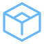
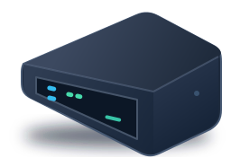
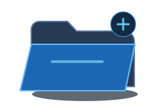
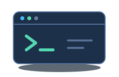
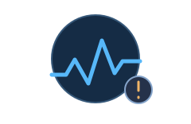
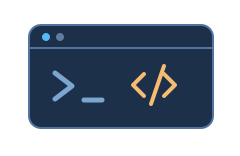
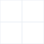
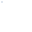
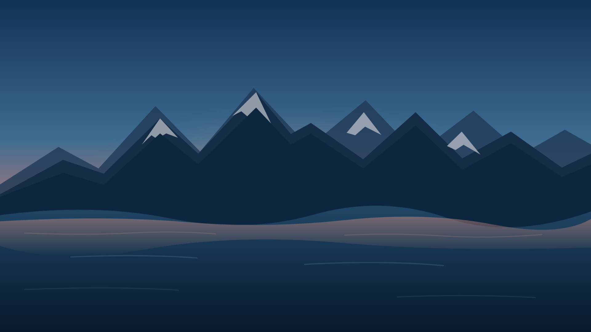

品牌 2

brand/edgedesk-mark.svg
brand/edgedesk-mark-mono.svg从 4 张原型提炼的 9 个独立 SVG（品牌 2、插画 5、装饰 2）。此文件可直接在浏览器中打开，检查透明背景、尺寸和主题配色。界面图标由 lucide-react 组件提供（见 ADR-0007），不再作为静态素材列出；正式 UI 的文件表格、监控图表和浮动窗口需要由组件渲染。
brand/edgedesk-mark.svg
brand/edgedesk-mark-mono.svg
illustrations/edge-device.svg
illustrations/empty-files.svg
illustrations/empty-terminal.svg
illustrations/monitor-unavailable.svg
illustrations/session-disconnected.svg
decorations/panel-grid.svg
decorations/dot-grid.svg
desktop/wallpaper-mountain-lake.svgdesktop/app-icons.svg#dashboard / #cpu / #memory / #storage / #network完整独立原型见 prototypes/index.html；本地运行说明见 prototypes/README.md。